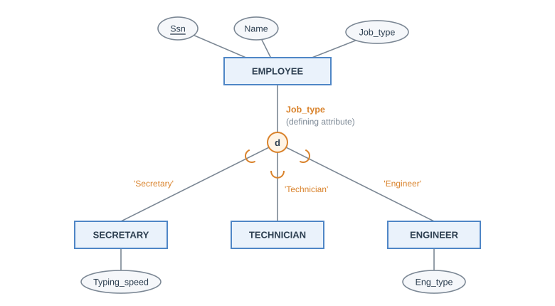
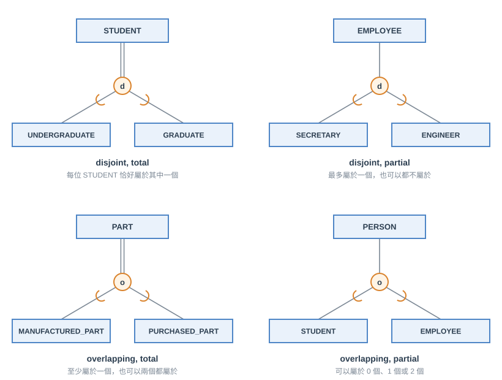
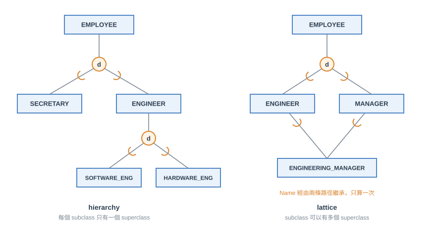
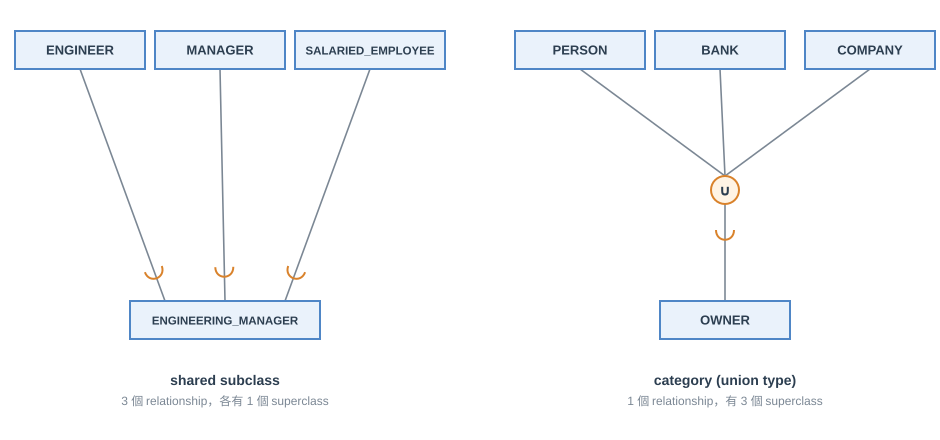
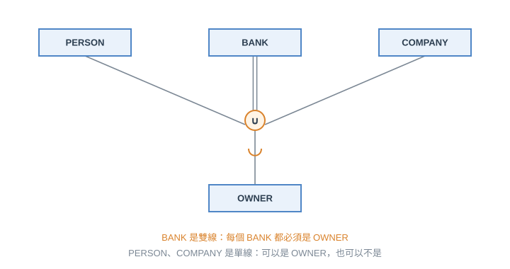

第一節 Subclass 與 Superclass
一個 entity type 裡的 entity 常常還可以再分成有意義的子群。例如 EMPLOYEE 可以依不同角度再分成：
- 依工作類別：SECRETARY、ENGINEER、TECHNICIAN
- 依扮演的角色：MANAGER
- 依薪資計算方式：SALARIED_EMPLOYEE、HOURLY_EMPLOYEE
每一個子群都是 EMPLOYEE 的子集合，稱為 EMPLOYEE 的 subclass (或 subtype)，EMPLOYEE 則是它們的 superclass。EMPLOYEE/SECRETARY、EMPLOYEE/MANAGER 這樣的配對叫做 superclass/subclass relationship，也稱為 IS-A relationship (SECRETARY IS-A EMPLOYEE)
關於 subclass 的 member，有幾個要記清楚的性質：
- subclass 的 member 與 superclass 的某個 member 是同一個現實世界的 entity，只是扮演不同的 role
- 一個 entity 不能只當 subclass 的 member 而存在，它一定也要是 superclass 的 member
- superclass 的 member 可以選擇性地加入任意多個 subclass：一位領月薪的工程師同時屬於 ENGINEER 與 SALARIED_EMPLOYEE；一位領月薪的工程經理同時屬於 MANAGER、ENGINEER、SALARIED_EMPLOYEE
- superclass 的 entity 不一定要屬於某個 subclass
Inheritance
subclass 的 member 會繼承 (inherit) 它在 superclass 中擁有的所有 attribute 與所有 relationship。例如 SECRETARY 會繼承 EMPLOYEE 的 Name、Ssn 等 attribute，每個 SECRETARY entity 在這些 attribute 上都有值
subclass 自己額外還可以有：
- specific (local) attribute：只屬於這個 subclass 的 attribute，例如 SECRETARY 的 TypingSpeed
- specific relationship type：只有這個 subclass 才參與的 relationship，例如 HOURLY_EMPLOYEE 才參與的 BELONGS_TO
第二節 Specialization 與 Generalization

- specialization：由 superclass 出發，根據 entity 的某個區別特徵，定義出一組 subclass。是 top-down 的 conceptual refinement。例如 {SECRETARY, ENGINEER, TECHNICIAN} 是 EMPLOYEE 依 job type 做的 specialization，{SALARIED_EMPLOYEE, HOURLY_EMPLOYEE} 是依 method of pay 做的另一個 specialization。同一個 superclass 可以有很多個 specialization
- generalization：反過來，由幾個有共同特徵的 class 出發，歸納出一個 superclass，原本的 class 變成它的 subclass。是 bottom-up 的 conceptual synthesis。例如把 CAR 與 TRUCK generalize 成 VEHICLE
兩者最後得到的結果是一樣的 (一個 superclass 與一組 subclass)，只是思考的方向不同，所以 EER diagram 裡不畫箭頭來區分 (到底算 specialization 還是 generalization 常常很主觀)。實務上兩種方向會混著用
<註> generalization 的結果通常是 total (見下一節)，因為 superclass 是由那些 subclass 歸納出來的，superclass 裡的每個 entity 本來就來自某個 subclass
上圖是 EER diagram 的基本畫法：
- circle 代表一個 specialization，superclass 連到 circle，circle 再連到各個 subclass
- 線上的 subset symbol (U 形)，開口朝向 superclass，表示 subclass 是 superclass 的子集合
- circle 裡的字母 d 或 o 代表 disjoint 或 overlapping (下一節)
- subclass 的 local attribute 掛在自己身上 (TypingSpeed 只屬於 SECRETARY)，繼承來的 attribute 不用再畫
- superclass 與 subclass 都用矩形，因為它們都是 entity 的集合與型別，統稱 class
Specialization 的決定方式
subclass 的 member 怎麼決定，分成三種：
| 種類 | 怎麼決定 member | 圖上畫法 |
|---|---|---|
| predicate-defined (condition-defined) | 由一個條件 (predicate) 決定哪些 entity 是 member | 條件寫在連到 subclass 的線旁 |
| attribute-defined | predicate-defined 的特例：所有 subclass 的條件都是同一個 attribute 的值 | 在 superclass 到 circle 的線旁寫 defining attribute 的名字，各 subclass 線旁寫值 |
| user-defined | 沒有條件，由使用者逐一指定每個 entity 要不要加入 | 線旁什麼都不寫 |
<註> 包含關係是 attribute-defined ⊂ predicate-defined，user-defined 則是另外一類。上圖的 Job_type 是 defining attribute，’Secretary’、’Technician’、’Engineer’ 是各 subclass 的條件值
形式化地寫，predicate-defined 的 subclass 是 $S = C[p]$，也就是 superclass $C$ 中滿足條件 $p$ 的 entity。attribute-defined 的條件形如 $A = c_i$ ($A$ 是 attribute、$c_i$ 是常數)。如果各 $c_i$ 不相同、而且 $A$ 是 single-valued，那麼這個 specialization 一定是 disjoint (一個 entity 的 $A$ 只有一個值，不可能同時等於兩個不同常數)
第三節 Specialization 的 Constraint
specialization / generalization 有兩個基本的 constraint，而且兩者互相獨立：
| Constraint | 問的問題 | 選項 | 圖上畫法 |
|---|---|---|---|
| disjointness | 一個 entity 可以同時屬於幾個 subclass？ | disjoint：至多一個；overlapping：可以多個 | circle 裡寫 d 或 o |
| completeness | superclass 的 entity 一定要屬於某個 subclass 嗎？ | total：一定要；partial：可以不屬於任何一個 | superclass 到 circle：total 雙線、partial 單線 |

兩個 constraint 各兩種選擇，所以一共有 4 種組合：disjoint total、disjoint partial、overlapping total、overlapping partial。上圖是各一個例子。
用集合的寫法會更清楚。設 specialization $Z = \{S_1, S_2, \dots, S_n\}$ 的 superclass 是 $G$：
- total：$S_1 \cup S_2 \cup \dots \cup S_n = G$ (所有 subclass 聯集起來等於 superclass)；否則是 partial
- disjoint：對所有 $i \neq j$，$S_i \cap S_j = \emptyset$ (任兩個 subclass 沒有共同的 entity)；否則是 overlapping
<註> 這裡的雙線 / 單線與第三章 relationship 的 total / partial participation 是同一個概念：雙線代表「這一端的每個 entity 都必須參與」。在 specialization 裡，「參與」就是「屬於某個 subclass」。另外，如果需求沒有任何限制，預設就是 overlapping 且 partial
第四節 Hierarchy、Lattice 與 Shared Subclass
一個 subclass 自己也可以再當別的 subclass 的 superclass，一層一層往下，形成 hierarchy 或 lattice：

| 結構 | 規則 | 又叫 | 形狀 |
|---|---|---|---|
| hierarchy | 每個 subclass 只有一個 superclass | single inheritance | 樹 |
| lattice | 一個 subclass 可以有多個 superclass | multiple inheritance | 一般的圖 |
有一個以上 superclass 的 subclass 叫 shared subclass，例如 ENGINEERING_MANAGER 同時是 ENGINEER 與 MANAGER 的 subclass。shared subclass 的 member 必須同時是所有 superclass 的 member
inheritance 在 hierarchy 或 lattice 中的規則：
- subclass 不只繼承直接 superclass 的 attribute，還會繼承所有祖先 superclass 的 attribute
- 如果同一個 attribute (或 relationship) 來自同一個祖先，經由不同路徑被繼承了不只一次，在 shared subclass 裡只會算一次。上圖 ENGINEERING_MANAGER 從 ENGINEER 與 MANAGER 兩條路徑都繼承到 EMPLOYEE 的 Name，但 Name 只會出現一次
<註> 「只算一次」指的是同一個 attribute 經由不同路徑到達同一個 shared subclass 時不會重複。attribute 只在最頂端的 superclass 定義一次，往下所有 subclass 都擁有它，shared subclass 也只有一份
第五節 Category (Union Type)
前面所有的 superclass/subclass relationship 都只有一個 superclass。shared subclass 是 subclass 同時出現在好幾個 superclass/subclass relationship 中，每個 relationship 各有一個 superclass。
有時需要的是另一件事：一個 superclass/subclass relationship，卻有多個 superclass，而且這些 superclass 還可以是不同 entity type。這種 subclass 叫 category，也叫 union type

例如車輛登記資料庫中，車子的 OWNER 可能是 PERSON、BANK (有留置權的銀行)、COMPANY。這三種是完全不同的 entity type (連 key 都不一樣：Ssn、Bname、Cname)，但 OWNER 這個 category 就是它們的聯集的子集合
| shared subclass | category (union type) | |
|---|---|---|
| superclass/subclass relationship 數量 | 多個，每個有 1 個 superclass | 1 個，有多個 superclass |
| 集合關係 | $S \subseteq D_1 \cap D_2 \cap \dots \cap D_n$ | $T \subseteq D_1 \cup D_2 \cup \dots \cup D_n$ |
| member 的條件 | 必須同時是所有 superclass 的 member | 只要是至少一個 (通常只有一個) superclass 的 member |
| inheritance | multiple inheritance，繼承所有 superclass 的 attribute | selective inheritance，只繼承它實際所屬的那個 superclass 的 attribute |
| superclass 的 entity type | 通常是同一個 entity type 的 subclass (key 相同) | 可以是不同 entity type，可以有不同的 key |
<註> 一個 OWNER 通常只會是 PERSON、BANK、COMPANY 其中一個，所以只會繼承那個 superclass 的 attribute，這就是 selective。嚴格來說 category 的 member 要「至少屬於其中一個 superclass (通常只有一個)」，不是一定只有一個

category 也有 total / partial，畫法與 specialization 一樣：
- 雙線 (如上圖的 BANK)：這個 superclass 的每個 entity 都必須是 category 的 member，也就是每個 BANK 都一定是 OWNER
- 單線 (PERSON、COMPANY)：可以是 category 的 member，也可以不是
形式上，category 是 $T \subseteq (D_1 \cup D_2 \cup \dots \cup D_n)$。也可以對每個 $D_i$ 加一個條件 $p_i$，變成 $T = (D_1[p_1] \cup D_2[p_2] \cup \dots \cup D_n[p_n])$，意思是只有 $D_i$ 中滿足 $p_i$ 的 entity 才是 $T$ 的 member。全部 superclass 都是 total 時，category 剛好就是整個聯集
第六節 設計時的取捨
EER 可以定義很多 subclass 讓模型更精確，但不是越多越好：
- 如果 subclass 只有很少的 specific attribute 而且沒有 specific relationship，可以直接合併回 superclass
- 如果一個 specialization 的所有 subclass 都是這種情況，可以全部合併，改用一個或多個 type attribute 來記錄每個 entity 屬於哪些 subclass
- category (union type) 通常應該避免，有些設計方法甚至沒有 union type
- disjoint / overlapping 與 total / partial 的選擇要依現實世界的規則決定；沒有限制時預設 overlapping、partial
第七節 Formal Definition
| 名詞 | 定義 |
|---|---|
| class $C$ | 一個 entity 的集合，可以是 entity type、subclass、superclass 或 category。relationship type 的定義裡「entity type」都改成「class」，這樣 class 之間也能有 relationship |
| subclass $S$ | 繼承 class $C$ 所有 attribute 與 relationship，且 $S \subseteq C$ |
| specialization $Z$ | $Z = \{S_1, S_2, \dots, S_n\}$ 是有相同 superclass $G$ 的 subclass 集合；$G$ 稱為這些 subclass 的 generalization |
| total | $S_1 \cup S_2 \cup \dots \cup S_n = G$ |
| disjoint | $S_i \cap S_j = \emptyset$，$i \neq j$ |
| predicate-defined | $S = C[p]$ |
| category $T$ | $T \subseteq (D_1 \cup D_2 \cup \dots \cup D_n)$，$n > 1$ |
第八節 其他表示法與 Knowledge Representation
UML class diagram 也可以表達 specialization / generalization，用 generalization 箭頭，並在旁邊標 {disjoint} 或 {overlapping}。不同設計工具的 notation 差異很大，概念相同
Knowledge Representation (KR) 處理的是某個領域的知識如何建模，常用 ontology：描述某個領域的概念與概念之間的關係，作用像是 knowledge base 的 schema。KR 與資料建模有幾個相同的抽象：classification、aggregation、generalization、identification。差別在於 KR 的範圍更廣，要處理缺漏的知識與常識，包含 rule 與 reasoning，而且 schema 與 instance 常常混在一起。ontology 在醫學、科學、工程領域用來統一概念與術語
總結
- EER 新增的概念：subclass / superclass、specialization / generalization、category (union type)、inheritance
- 符號：circle 代表一個 specialization，裡面寫 d (disjoint) 或 o (overlapping)；U 形 subset symbol 開口朝向 superclass；superclass 到 circle 的雙線是 total、單線是 partial；category 用 ∪ 圓圈
容易搞混的整理：
| 容易搞混的點 | 結論 |
|---|---|
| specialization vs generalization | 結果一樣，只是方向不同：由 superclass 推 subclass 是 specialization，由 subclass 推 superclass 是 generalization (通常是 total)；EER 不畫箭頭 |
| predicate-defined、attribute-defined、user-defined | attribute-defined 是 predicate-defined 的特例；user-defined 沒有條件 |
| disjoint / overlapping vs total / partial | 互相獨立，共 4 種組合。d / o 看 subclass 之間，total / partial 看 superclass 有沒有被蓋滿 |
| hierarchy vs lattice | hierarchy 每個 subclass 只有 1 個 superclass (single inheritance)；lattice 可以有多個 (multiple inheritance) |
| 經多條路徑繼承 | 同一個 attribute 只會繼承一次 |
| shared subclass vs category | shared subclass：多個 relationship、每個 1 個 superclass、是交集的子集合、member 要屬於所有 superclass；category：1 個 relationship、多個 superclass、是聯集的子集合、member 屬於至少一個 (通常只有一個) superclass |
| category 的 inheritance | selective，只繼承實際所屬的 superclass 的 attribute |
| category 的 total 雙線 | 畫在 superclass 到 circle 的線上，表示該 superclass 的每個 entity 都必須是 category 的 member |
| subclass 設計 | specific attribute 很少又沒有 specific relationship 時，應合併回 superclass |
參考文獻
R. Elmasri and S. B. Navathe, Fundamentals of Database Systems, 7th Ed., Pearson, 2016.